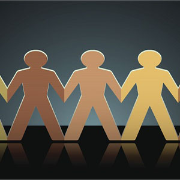

May
Week 6 Cultural Blog - Stereotype Threat
What is Stereotype Threats?
Stereotype threats is the experience of anxiety in a situation in which a person has the potential to confirm a negative stereotype about his or her social group. This could be based on sexual orientation, gender, age, religion, or race. Negatively stereotype groups has been shown to have reduced performance, which can be caused by becoming anxious about their performance or losing confidence within themselves.
Moving to the East Bay when I was in the 7th grade in the 1980s from San Francisco was a big change in my life. From a city that had a high percentage of asians, to a town called San Lorenzo where I was 1 of 4 other asians in my class and the rest was predominately whites and hispanics. I recalled being stereotype as the timid non confrontational type that just did well in school and minded my own business. Though I never thought of these stereotypes having any impact in my life, after listening to Claude M. Steele lecture on Stereotype Threats, I can see how these stereotypes hinder performance and confidence. My past 20 years working has provided me with a few opportunities to take up leadership roles. Though every time these leadership roles was presented to me, I couldn't help but feel unqualified, have fears of speaking up in meetings, and fears of dealing with conflict in the office. I now see that some of these feelings we're causes of stereotypes I was given when I was younger. I recalled going into meetings, having a great idea but was afraid to present it because I feared the confrontation of others that disagrees with my suggestions.
One thing important that helped me get over these fears and diminish the effects of these stereotypes is having a great boss and a healthy work environment that helps encourage personal growth and promotes equality in all team members. Everyone on the team respected each other and my boss was constantly giving me the podium to allow me to express my ideas and vision of my department.
I hope that as I encounter stereotype threats toward me or toward someone else is to first recognize it. Once recognized, find alternative ways of providing constructive feedback that is encouraging and inclusive. I also hope that if someone else recognized that I have a stereotype bias toward them to please let me know. Lastly, I hope to provide feedback that will make them feel they are part of the team and encourage their capabilities of reaching a high standard. I would promote an engaging healthy environment where everyone's opinion counts and no one should feel singled out because of their sex, age, orientation, religion, or race.
Resources
Video - Claude M. Steele, "Identity and Stereotype Threat"
Wikipedia - Stereotype Threat